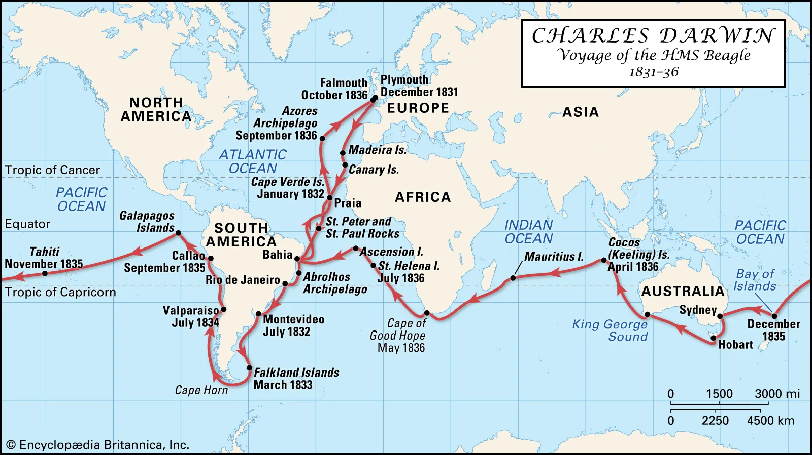

Introduction
Have you always been curious about the biological origins of humans and other species alike? Today sceince can tell us many things about our ancestory, but just over 200 years ago most people exclusively believed that all living beings on Earth were created by a divine power. Our knowledge of evolution was built from the foundations of a revolutionary biologist known as Charles Darwin. In this wesbite, you will be taken through the most significant moments in Darwin's life, all of them accumulating to create his defining legacy: The Theory of Evolution by Natural Selection.
Who was Charles Darwin?
Charles Robert Darwin was a British Naturalist and Biologist, whose scientific theory of evolution through natural selection, rebuilt our understanding of evolution and the history of our species. He was born in Shrewsbury, Shropshire (February 2nd, 1809) and died in Downe, Kent (April 19th 1882). Darwin was born into an affluent family with two free-thinking grandfathers to influence him in early life; Josiah Wedgewood was a pottery Industrialist and anti-slavery campaigner, while Erasmus Darwin was a physician and poet who published the highly controversial book Zoonomia; or the Laws of Organic Life.
Darwin attended an Angelican school at a time where it was considered indecorous to study science. After taking it upon himself to understand the laws of chemistry, he was condemned by his headmaster and classmates. In 1825 his father sent him to the University of Edinburgh to study medicine. Despite taking a strong dislike to studying medicine, he found that Edinburgh was one of the best universities to study the science. Unlike Oxford and Cambridge, where radical opinions would not have been welcomed, Edinburgh attracted non-conformists who were not afraid to share their theories on transmutation (or evolution as it is known as now). Darwin found a mentor in Robert Edmond Grant, a progressive evolutionist and an expert in sponges-members of the phylum Porifera taxon.
Darwin’s detest at studying medicine did not subside and his father soon realised this. In an attempt to keep his son on the right track, Robert Darwin switched Charles to Christ’s College, Cambridge in 1828 where he would later graduate with a Bachelor of Arts degree. Despite this, Darwin still took a huge interest in the natural world while he was at Cambridge, collecting beetles in his spare time and learning about botany from professor Reverand John Stevens Henslow. Henslow later suggested that Darwin join a voyage as a gentleman naturalist, a journey that would come to define the history of evolution as we know it.
An Expedition Around the World
On December 27th 1821, Darwin set sail aboard the HMS Beagle as a companion to aristocrat captain Robert Fitzroy. The expedition lasted five years and covered four continents, presenting Darwin with a multitude of opportunities for biological study, but also exposing him to physical hardships as he was often plagued by terrible sea-sickness. As a naturalist, he could spend extended periods of time on land, studying the environment and collecting specimens. This meant that he only spent around 18 months actually on the ship during the years of the voyage.
Darwin made many fossil discoveries in South America, collecting an array of skulls and bones from large mammals, expanding his interest to the primeval world. After spending approximately three years exploring South America, the HMS Beagle moved on to the Galápagos Islands where for five weeks, Darwin took the time to study finches, mockingbirds, iguanas and tortoises. His observations from those islands gave way to a very prominent example of evolution by natural selection: Darwin’s finches. Contrary to popular belief, this discovery was not made on the Galapagos Islands themselves, but much later when the voyage had ended and Darwin’s feet were once again firmly planted on English soil.
Darwin's Return to England
Now widely respected in the science community, Charles Darwin began sharing his findings with other biologists and writing up his accounts from the expedition. He became the secretary of the Geological Society by 1838 and used this position to hire experts who could aid him in publishing the Zoology of the Voyage of H.M.S Beagle (1838-1843). With the help of his peers, he was able build a stronger understanding of the findings from his travels. An esteemed anatomist by the name of Richard Owen, identified that many of the fossils Darwin had brought back from South America were in-fact extinct animals, namely, large Sloths, Anteaters and Armadillos. The most valuable insight was provided when ornithologist John Gould, clarified that the birds Darwin previously thought were a combination of wrens, finches, gross-beaks and oriole relatives, were actually all ground-finches that had adapted differently on each of the Galápagos islands. Gould also stated the same thing about the mockingbirds found on the islands.
Darwin's Finches
While the biological world was moving forward, England itself was still very much under an Angelican status quo and the act of even mentioning transmutation amongst wider society, would have been considered blasphemous. Darwin witnessed the persecution of his peers by the Church and in fear of being ostracized, kept his theories under wraps while gathering more evidence. By 1844 he had drafted a lengthy sketch of his theory of natural selection, but made no attempts to publish. Darwin bided his time and focused his attention on studying barnacles. He grew fascinated by their sexual differentiation and wrote four monographs on the subject of the hermaphrotdite creatures, earning him the Royal Society’s Royal Medal in 1853. With this accolade, he felt he could no longer be shunned on matters of biology.
On the Origin of Species
Darwin maintained his research, studying seeds and pigeons and analysing how they adapted to their environments. By June 1858, he had produced a quarter of a million words for his theory of natural selection. One man, Alfred Russell Wallace, compelled Darwin to publish his work. Wallace had been working in the Malay Archipelago Islands and had been formulating a similar theory to that of Darwin’s. Worried that Wallace would take all the credit for their similar theories, Darwin wanted to publish his work but also give adequate credit to Wallace for his findings. It was decided that their work would be equally evaluated and on July 1st 1858, the Linnean society read through joint extracts from both men’s work. Unfortunately, tragedy struck Darwin and the agonizing loss of his 18 month old son meant he was not in attendance for the presentation.
Determined to make a more significant name for himself, but also wracked with the fear of losing what reputation he already had, Darwin published On the Origin of Species by Means of Natural Selection. While he did draw criticism from members of society for his implication that humans had derived from apes, his book was largely well received, especially from those in the scientific community. Despite taking such a huge step in his career, he was still reluctant to defend his theories in public. Thomas Huxely, a young biologist, became a bold advocate for Darwin’s work, often content to have large public debates about natural selection in the name of scientific advancement.
By 1869, On the Origin of Species had become a worldwide bestseller and Darwin began on multiple new editions of the book. In the 5th edition, he introduced the theory of ‘survival of the fittest’ , an idea coined by philosopher Herbert Spencer and it became a much more prominent part of Darwin’s natural selection theory. He went on to publish The Descent of Man in 1871, where he was much more confident in expressing his professional theories on the evolution of the human species.
Over the course of his career Charles Darwin published a commendable collection of work, all of which influenced how we understand evolution in the modern day. If you wish to explore those works, please click here.
The Charles Darwin Foundation works to safeguard the Galápagos from habitat loss, overfishing, invasive species and climate change. They work tirelessly on the frontlines, using science and conservation aid to protect the vast biodiversity that comprises the Islands. The foundation also has a globally recognised research station on Santa Cruz Island and provides a number of different ways that you can help with their efforts, including donating, adopting a species and even volunteering. If you would like to learn more about the Charles Darwin Foundation, please click here.
- Alfred Russel Wallace - Naturalist and Explorer
- Carolus Linnaeus - Biologist
- Jean-Baptiste Lamarck - Biologist
- Rosalind Franklin - Chemist
- Stephen Jay Gould - Paleontologist